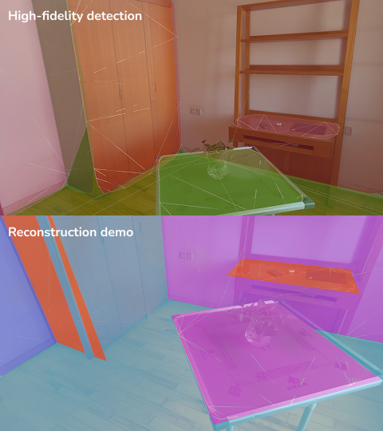
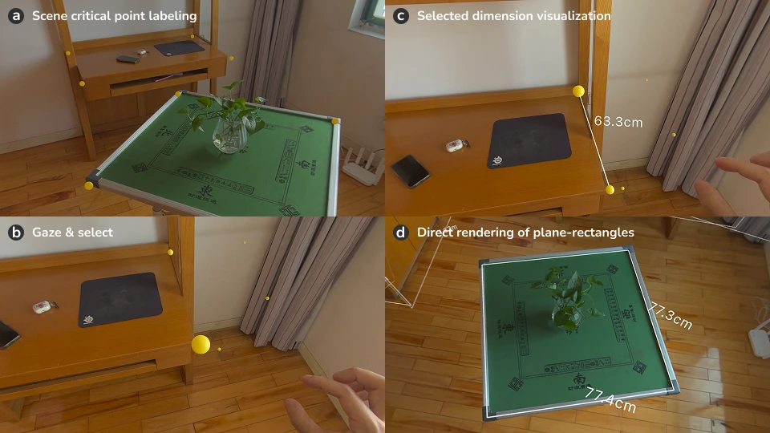

Development

rulAR is developed on Vision Pro (visionOS 2.0), with all designs completed using Apple's internal developer resources, including ARKit, RealityKit, and UIKit.
PlaneAnchor serves as the core of this work for obtaining the initial raw scene data, and we specifically utilized its high-fidelity mesh overlay data for rulAR.
A robust backend pipeline of geometric scene reconstruction and rendering is implemented. One essential part is a two-step optimization algorithm to reconstruct raw mesh boundaries into useful attributes for rulAR's interface.
A robust backend pipeline of geometric scene reconstruction and rendering is implemented. One essential part is a two-step optimization algorithm to reconstruct raw mesh boundaries into useful attributes for rulAR's interface.
Interactions

By providing critical points in the scene, users can use lightweight gaze-tap input to achieve select-measure interactions and query any interested dimension in the current environment. Measurement interactions can also be achieved purely through visual communication by directly rendering the plane-rectangle data in the scene.
BibTeX Citation
@INPROCEEDINGS{incoming
}